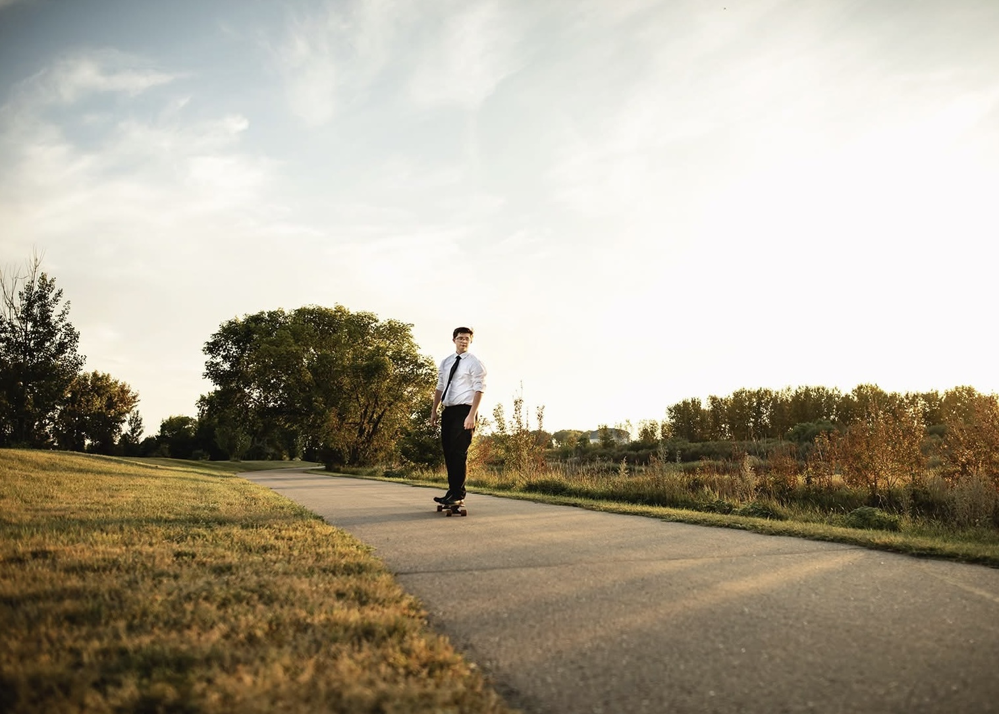

Hello, and welcome to my website! My name is Alexander Munson, a freshman studying Mechanical Engineering at North Dakota State University.
I would describe myself as a high-achieving student with a determination to learn and succeed. On top of mechanical engineering,
I am also pursuing a minor in robotics and computer science.
I grew up in Bismarck, North Dakota. Early on, my dad got me into STEM,
and that definitely sparked a lasting interest. There wasnt a ton to do
in Bismarck besides school, so I ended up putting a lot of energy into
learning, and it really set the tone for where I'm headed now.


Now, I've found my way to NDSU. So far my time here has been tons of fun and super busy.
Im a member of the bison robotics club under combat robotics, as well as the climbing club.
A little more about me, I play the trumpet, a little bit of piano, I love playing pool, longboarding, making cool stuff, and learning about whatever I can get my hands on!
